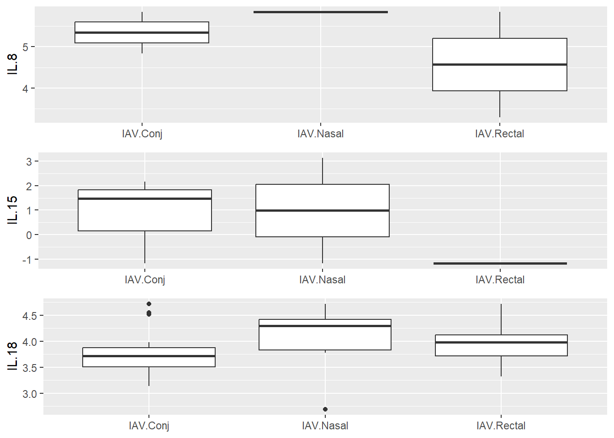
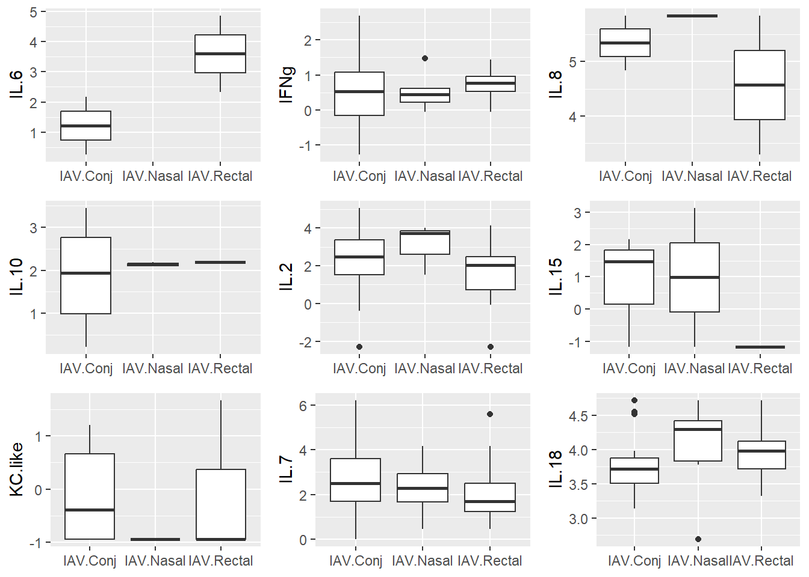

7 IAV ~ swabs
7.2 Read in data
# Cytokines
cyto <-
read.csv("Output Files/cleaned_cytokine.csv")
cytobin <-
read.csv("Output Files/cleaned_cytokine_bin.csv")
cytoscale <-
read.csv("Output Files/cleaned_cytokine_scaled.csv")
# Metadata
meta <-
read.csv("Output Files/metadata_cyto.csv") %>%
mutate(iav=gsub("neg", "IAV-", iav),
iav=gsub("pos", "IAV+", iav))
# Swab/virology data
viro <-
read.csv("Input Files/Hg_virology_2023.csv", sep=',', strip.white=TRUE) %>%
select(Tag.ID., year, IAV, IAV.Nasal, IAV.Conj, IAV.Rectal) %>%
filter(Tag.ID. %in% meta$Sample)7.3 Tidy & Merge Data
# Clean up swab data
viro_tidy <-
viro %>%
mutate(IAV.Nasal=gsub(">45|Undetermined","neg", IAV.Nasal),
IAV.Nasal=gsub("Pooled\\(POS\\)", "POS", IAV.Nasal),
IAV.Nasal=gsub("\\#N\\/A", NA, IAV.Nasal),
IAV.Nasal=ifelse(IAV.Nasal < 45, "POS", IAV.Nasal),
IAV.Rectal=gsub(">45|Undetermined","neg", IAV.Rectal),
IAV.Rectal=gsub("Pooled\\(POS\\)", "POS", IAV.Rectal),
IAV.Rectal=gsub("ND|\\#N\\/A", NA, IAV.Rectal),
IAV.Rectal=ifelse(IAV.Rectal < 45, "POS", IAV.Rectal),
IAV.Conj=gsub(">45|Undetermined","neg", IAV.Conj),
IAV.Conj=gsub("\\#N\\/A", NA, IAV.Conj),
IAV.Conj=gsub("Pooled\\(POS\\)", "POS", IAV.Conj),
IAV.Conj=ifelse(IAV.Conj < 45, "POS", IAV.Conj))
# Merge cytokine, meta, virology data
data <-
cyto %>%
merge(., viro_tidy, by.x="Sample", by.y="Tag.ID.") %>%
mutate(IAV=meta$iav)
databin <-
cytobin %>%
merge(., viro_tidy, by.x="Sample", by.y="Tag.ID.") %>%
mutate(IAV=meta$IAV)
datascale <-
cytoscale %>%
merge(., viro_tidy, by.x="Sample", by.y="Tag.ID.") %>%
mutate(IAV=meta$iav)7.4 PCA on log-transformed, scaled, centered cytokine data
# Conj
data_conj <-
datascale %>%
filter(!is.na(IAV.Conj))
pca_conj <-
prcomp(data_conj[,2:10], center=FALSE, scale=FALSE)
plot_pca_conj <-
autoplot(pca_conj, data=data_conj, shape="IAV.Conj") +
scale_shape_manual(values=c(1, 19),
name="Conj Swab") +
theme_bw() +
theme(panel.grid=element_blank(), text=element_text(size=8),
legend.background=element_rect(size=0.5, linetype="solid", colour ="black"),
legend.position="bottom")## Warning: The `size` argument of `element_rect()` is
## deprecated as of ggplot2 3.4.0.
## ℹ Please use the `linewidth` argument
## instead.
## This warning is displayed once every 8
## hours.
## Call
## `lifecycle::last_lifecycle_warnings()` to
## see where this warning was generated.# Nasal
data_nasal <-
datascale %>%
filter(!is.na(IAV.Nasal))
pca_nasal <-
prcomp(data_nasal[,2:10], center=FALSE, scale=FALSE)
plot_pca_nasal <-
autoplot(pca_nasal, data=data_nasal, shape="IAV.Nasal") +
scale_shape_manual(values=c(1, 19),
name="Nasal Swab") +
theme_bw() +
theme(panel.grid=element_blank(), text=element_text(size=8),
legend.background=element_rect(size=0.5, linetype="solid", colour ="black"),
legend.position="bottom")
# Rectal
data_rectal <-
datascale %>%
filter(!is.na(IAV.Rectal))
pca_rectal <-
prcomp(data_rectal[,2:10], center=FALSE, scale=FALSE)
plot_pca_rectal <-
autoplot(pca_rectal, data=data_rectal, shape="IAV.Rectal") +
scale_shape_manual(values=c(1, 19),
name="Rectal Swab") +
theme_bw() +
theme(panel.grid=element_blank(), text=element_text(size=8),
legend.background=element_rect(size=0.5, linetype="solid", colour ="black"),
legend.position="bottom")
grid.arrange(arrangeGrob(plot_pca_conj, plot_pca_nasal, plot_pca_rectal, ncol=3))
7.5 Test for normality
# Create dataframe for results
norm_results <- data.frame(matrix(ncol=0, nrow=9)) %>%
mutate(cyto=colnames(datascale)[2:10],
W=NA,
pvalue=NA)
# Truncate data
data_norm <-
datascale[,2:10]
# Test!
for (i in 1:9) {
test <- shapiro.test(data_norm[,i])
norm_results[i,2] <- round(test$statistic, digits=3)
norm_results[i,3] <- test$p.value
}
norm_results # all not normally distributed## cyto W pvalue
## 1 IFNg 0.863 5.962382e-09
## 2 IL.2 0.752 1.023169e-12
## 3 IL.6 0.623 8.194377e-16
## 4 IL.7 0.887 6.870283e-08
## 5 IL.8 0.364 3.175029e-20
## 6 IL.10 0.587 1.506211e-16
## 7 IL.15 0.436 3.732445e-19
## 8 IL.18 0.972 1.555482e-02
## 9 KC.like 0.712 9.054308e-147.6 Cramer Test
Multivariate composition of the cytokine pattern between each infection stage group with its control. It can handle multiple variables, potentially complex interactions and correlations.
# Conj Swabs
con_pos <-
datascale %>%
filter(IAV.Conj=="POS") %>%
select(1:9) %>%
data.matrix()
con_neg <-
datascale %>%
filter(IAV.Conj=="neg") %>%
select(1:9) %>%
data.matrix()
cramer.test(con_pos, con_neg)##
## 9 -dimensional nonparametric Cramer-Test with kernel phiCramer
## (on equality of two distributions)
##
## x-sample: 22 values y-sample: 91 values
##
## critical value for confidence level 95 % : 783.8755
## observed statistic 617.0192 , so that
## hypothesis ("x is distributed as y") is ACCEPTED .
## estimated p-value = 0.09290709
##
## [result based on 1000 ordinary bootstrap-replicates]# Nasal Swabs
nas_pos <-
datascale %>%
filter(IAV.Nasal=="POS") %>%
select(1:9) %>%
data.matrix()
nas_neg <-
datascale %>%
filter(IAV.Nasal=="neg") %>%
select(1:9) %>%
data.matrix()
cramer.test(nas_pos, nas_neg)##
## 9 -dimensional nonparametric Cramer-Test with kernel phiCramer
## (on equality of two distributions)
##
## x-sample: 9 values y-sample: 106 values
##
## critical value for confidence level 95 % : 723.039
## observed statistic 304.1772 , so that
## hypothesis ("x is distributed as y") is ACCEPTED .
## estimated p-value = 0.3186813
##
## [result based on 1000 ordinary bootstrap-replicates]# Rectal Swabs
rec_pos <-
datascale %>%
filter(IAV.Rectal=="POS") %>%
select(1:9) %>%
data.matrix()
rec_neg <-
datascale %>%
filter(IAV.Rectal=="neg") %>%
select(1:9) %>%
data.matrix()
cramer.test(rec_pos, rec_neg)##
## 9 -dimensional nonparametric Cramer-Test with kernel phiCramer
## (on equality of two distributions)
##
## x-sample: 17 values y-sample: 97 values
##
## critical value for confidence level 95 % : 741.7722
## observed statistic 983.8619 , so that
## hypothesis ("x is distributed as y") is REJECTED .
## estimated p-value = 0.01498501
##
## [result based on 1000 ordinary bootstrap-replicates]##
## 9 -dimensional nonparametric Cramer-Test with kernel phiCramer
## (on equality of two distributions)
##
## x-sample: 22 values y-sample: 9 values
##
## critical value for confidence level 95 % : 481.5131
## observed statistic 160.5266 , so that
## hypothesis ("x is distributed as y") is ACCEPTED .
## estimated p-value = 0.4345654
##
## [result based on 1000 ordinary bootstrap-replicates]##
## 9 -dimensional nonparametric Cramer-Test with kernel phiCramer
## (on equality of two distributions)
##
## x-sample: 22 values y-sample: 17 values
##
## critical value for confidence level 95 % : 362.1832
## observed statistic 101.7637 , so that
## hypothesis ("x is distributed as y") is ACCEPTED .
## estimated p-value = 0.5474525
##
## [result based on 1000 ordinary bootstrap-replicates]##
## 9 -dimensional nonparametric Cramer-Test with kernel phiCramer
## (on equality of two distributions)
##
## x-sample: 9 values y-sample: 17 values
##
## critical value for confidence level 95 % : 447.3905
## observed statistic 244.5893 , so that
## hypothesis ("x is distributed as y") is ACCEPTED .
## estimated p-value = 0.1818182
##
## [result based on 1000 ordinary bootstrap-replicates]7.7 Cytokine Exploratory Plots ~ Swabs
# Configure data
swabs <-
data %>%
select(!year & !IAV & !analysis.year & !batch) %>%
pivot_longer(cols=c(2:10), names_to="cytokine", values_to="concentration") %>%
pivot_longer(cols=c(2:4), names_to="swab", values_to="status")
conj <-
swabs %>%
filter(swab=="IAV.Conj",
status=="POS")
nasal <-
swabs %>%
filter(swab=="IAV.Nasal",
status=="POS")
rectal <-
swabs %>%
filter(swab=="IAV.Rectal",
status=="POS")
pos_swabs <-
rbind(conj, nasal, rectal)
# Plots
ifn <-
pos_swabs %>%
filter(cytokine=="IFNg") %>%
ggplot(., aes(x=swab, y=log(concentration))) +
geom_boxplot() +
labs(x=NULL, y="IFNg")
# Plots
il2 <-
pos_swabs %>%
filter(cytokine=="IL.2") %>%
ggplot(., aes(x=swab, y=log(concentration))) +
geom_boxplot() +
labs(x=NULL, y="IL.2")
il6 <-
pos_swabs %>%
filter(cytokine=="IL.6") %>%
ggplot(., aes(x=swab, y=log(concentration))) +
geom_boxplot() +
labs(x=NULL, y="IL.6")
il7 <-
pos_swabs %>%
filter(cytokine=="IL.7") %>%
ggplot(., aes(x=swab, y=log(concentration))) +
geom_boxplot() +
labs(x=NULL, y="IL.7")
il8 <-
pos_swabs %>%
filter(cytokine=="IL.8") %>%
ggplot(., aes(x=swab, y=log(concentration))) +
geom_boxplot() +
labs(x=NULL, y="IL.8")
il10 <-
pos_swabs %>%
filter(cytokine=="IL.10") %>%
ggplot(., aes(x=swab, y=log(concentration))) +
geom_boxplot() +
labs(x=NULL, y="IL.10")
il15 <-
pos_swabs %>%
filter(cytokine=="IL.15") %>%
ggplot(., aes(x=swab, y=log(concentration))) +
geom_boxplot() +
labs(x=NULL, y="IL.15")
il18 <-
pos_swabs %>%
filter(cytokine=="IL.18") %>%
ggplot(., aes(x=swab, y=log(concentration))) +
geom_boxplot() +
labs(x=NULL, y="IL.18")
kc <-
pos_swabs %>%
filter(cytokine=="KC.like") %>%
ggplot(., aes(x=swab, y=log(concentration))) +
geom_boxplot() +
labs(x=NULL, y="KC.like")
imp <- grid.arrange(arrangeGrob(il6, il10, kc))## Warning: Removed 44 rows containing non-finite
## outside the scale range
## (`stat_boxplot()`).## Warning: Removed 39 rows containing non-finite
## outside the scale range
## (`stat_boxplot()`).## Warning: Removed 33 rows containing non-finite
## outside the scale range
## (`stat_boxplot()`).
## Warning: Removed 24 rows containing non-finite
## outside the scale range
## (`stat_boxplot()`).## Warning: Removed 25 rows containing non-finite
## outside the scale range
## (`stat_boxplot()`).## Warning: Removed 18 rows containing non-finite
## outside the scale range
## (`stat_boxplot()`).
## Warning: Removed 43 rows containing non-finite
## outside the scale range
## (`stat_boxplot()`).## Warning: Removed 42 rows containing non-finite
## outside the scale range
## (`stat_boxplot()`).
